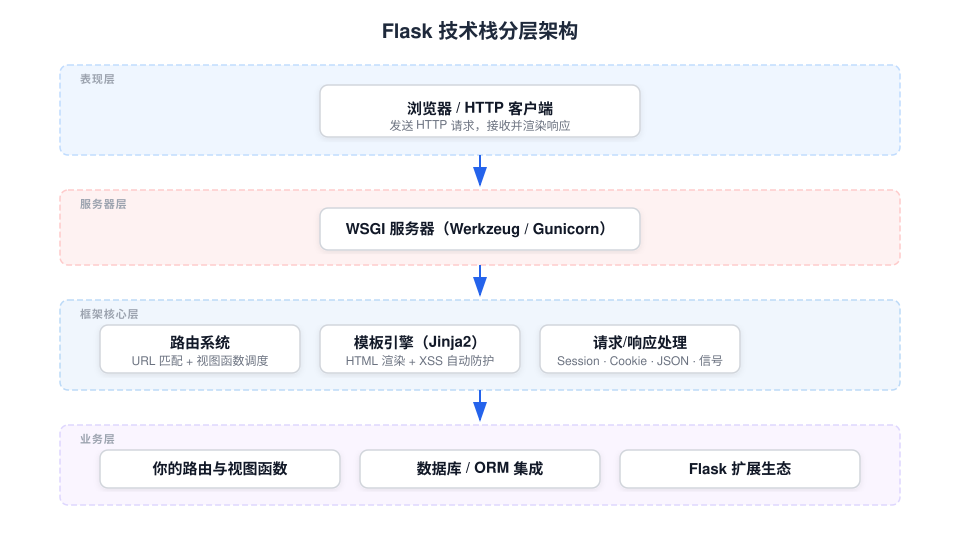

Flask Introduction
Flask is a lightweight Python web application framework developed and maintained by the Pallets organization.
It is known for its simplicity and flexibility, allowing you to quickly build web applications while also having the capability to scale to complex projects.
Flask is a micro web framework developed in Python, referred to as a microframework. The core reason is that it does not bind any dedicated tools or dependency libraries by itself, and natively does not include common web components such as database abstraction layers and form validation.
Flask has good extensibility and can add feature plugins as needed. Currently, there are mature extensions for ORM object-relational mapping, form validation, file uploads, open authentication, and various supporting development tools, which can complete the required functionality for projects as needed.
What is Flask
Flask is aWSGI（Web Server Gateway Interface）Web application framework.
WSGI is a standard interface defined by Python that specifies how web servers communicate with Python web applications. You can think of it as the "universal socket" of the Python web world.
Flask was originally just a simple wrapper around Werkzeug and Jinja, and has now grown into one of the most popular web frameworks in the Python community.
Core Dependencies
When installing Flask, the following dependencies are installed automatically, each handling its own role:
| Dependency Libraries | Function | When do you come into contact with it |
|---|---|---|
| Werkzeug | WSGI toolkit, responsible for HTTP request parsing, response encapsulation, and URL route matching | When processing requests and returning responses, Werkzeug is what works underneath. |
| Jinja2 | Template engine, responsible for rendering data into HTML pages | Usagerender_template()When generating dynamic pages |
| Click | Command-line tool framework, providingflaskTerminal Commands | Runflask run, when customizing CLI commands |
| itsdangerous | Data signing library, ensuring data integrity is not tampered with | Signature verification of session cookies. |
| blinker | Signal mechanism, allowing callbacks to be triggered when specific events occur | Want to execute custom logic at the start/end of a request |
Understanding and Memorization: Think of Flask as a car, Werkzeug is the engine (core power), Jinja2 is the interior (the part users see), Click is the steering wheel (the way you control it), itsdangerous is the seatbelt (security guarantee).
Flask's design philosophy
Flask's two core concepts determine how it is used.
Micro framework, not micro in capability
Flask's core is very minimal, but through its rich extension ecosystem, it can satisfy almost any need.
It does not force you to use a specific database, form library, or project structure—developers choose the most suitable tools themselves.
This design means: small projects are not dragged down by the framework, and large projects can be assembled as needed.
Explicit is better than implicit
Unlike some "all-in-one" frameworks, Flask does not secretly do many things for you.
Each feature requires you to explicitly introduce and configure it. This may require writing a few more lines when learning, but in exchange you get complete control over the project.
If you have previously used Django, you might feel that Flask "requires you to do everything yourself." This is precisely Flask's design intent: to let you clearly know where each feature comes from.
Flask Features
Lightweight and concise: Flask is a microframework that provides the most basic functionality and does not force the use of any specific tools or libraries. Its core is simple and flexible, allowing developers to add features as needed.
Flexibility: Flask provides a basic framework structure without mandatory project layout or components; developers can customize according to their needs.
Extensibility: Flask's design allows you to add functionality through plugins and extensions. Many common features, such as form handling, database interaction, and user authentication, can be implemented through community-provided extensions.
Built-in development server: Flask comes with a built-in development server, making it convenient for local debugging and testing.
RESTful Support: Flask supports the development of RESTful APIs, making it suitable for building modern web services and applications.
If you have previously used Django, you might feel that Flask "requires you to do everything yourself." This is precisely Flask's design intent: to let you clearly know where each feature comes from and have complete control over the project.
Use cases for Flask
Small Projects: For small personal projects or startup projects, Flask's simplicity and flexibility allow for quick startup and iteration.
Prototype Development: In the early stages of product development, Flask can be used to quickly build prototypes, validate concepts, and user interfaces.
Microservices: In microservices architecture, Flask can be used to build independent, lightweight service components.
API Development: Flask is very suitable for developing RESTful APIs because its routing system is simple and clear, making it easy to define API endpoints.
Education and Learning: Due to its ease of use, Flask is an excellent tool for learning web development and Python programming.
Internal Tools: Flask can be used to develop internal company tools or dashboards, which typically do not require complex user interfaces.
Plugins or Extensions: Flask can be used as a plugin or extension for other large frameworks, providing specific functionality.
Custom Web applications: For web applications that require a high degree of customization, Flask provides enough flexibility to meet specific needs.
Data visualization: Flask can be combined with data visualization libraries (such as Bokeh or Plotly) to create interactive data visualization web applications.
Scientific computing and data analysis: Flask can be combined with scientific computing libraries (such as NumPy, Pandas) to develop web applications for data analysis and scientific computing.
Lightweight CMS: Flask can be used to build lightweight content management systems, especially when high customization is required.
Web Scraping: Flask can be used as the backend of web scraping projects, handling data scraping and API requests.
Components of Flask
/Users/tianqixin/example-test/example-article/2026-05-13/images/flask-architecture.svgFlask application instance: The core of Flask is the application instance; the application is initialized by creating a Flask object.
Routes and view functions: Routing maps URLs to view functions, which process requests and return responses.
Template System: Flask uses the Jinja2 template engine to render HTML pages, dynamically inserting data into pages.
Request and ResponseFlask processes HTTP requests and generates responses, supporting multiple HTTP methods (such as GET, POST).
Technology stack panorama
The figure below shows the typical layered structure of a Flask application, helping you understand the position of each component from an overall perspective:

other extensions